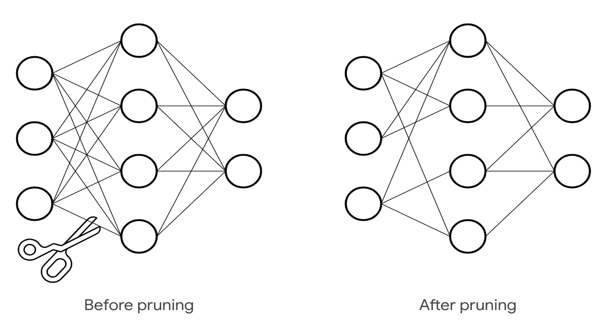

# Agenda
1. What is TensorFlow?
1. Keras vs TensorFlow
1. Best Practices
1. Periphery
1. What's next?
# Agenda
1. _What is TensorFlow?_
1. Keras vs TensorFlow
1. Best Practices
1. Periphery
1. What's next?
## What is TensorFlow
* Platform
* Ecosystem
* Foundation for differentiable programming
## Numpy++
* Gradients
* GPU, TPU
* Tensor = Multi Dimensional Array
# Agenda
1. What is TensorFlow?
1. _Keras vs TensorFlow_
1. Best Practices
1. Periphery
1. What's next?
TensorFlow Low-Level Training Loop
optimizer = tf.keras.optimizers.SGD(learning_rate=1e-3)
loss_fn = tf.keras.losses.SparseCategoricalCrossentropy()
train_dataset = tf.data.Dataset.from_tensor_slices((x_train, y_train))
train_dataset = train_dataset.shuffle(buffer_size=1024).batch(batch_size)
val_dataset = tf.data.Dataset.from_tensor_slices((x_val, y_val))
val_dataset = val_dataset.batch(batch_size)
for epoch in range(epochs):
for step, (x_batch_train, y_batch_train) in enumerate(train_dataset):
with tf.GradientTape() as tape:
y_batch_pred = model(x_batch_train, training=True)
loss_value = loss_fn(y_batch_train, y_batch_pred)
grads = tape.gradient(loss_value, model.trainable_weights)
optimizer.apply_gradients(zip(grads, model.trainable_weights))
train_acc_metric.update_state(y_batch_train, y_batch_pred)
train_acc = train_acc_metric.result()
train_acc_metric.reset_states()
for x_batch_val, y_batch_val in val_dataset:
y_batch_val_pred = model(x_batch_val, training=False)
val_acc_metric.update_state(y_batch_val, y_batch_val_pred)
val_acc = val_acc_metric.result()
val_acc_metric.reset_states()
https://www.tensorflow.org/guide/basic_training_loops
https://www.tensorflow.org/guide/keras/writing_a_training_loop_from_scratch
# Agenda
1. What is TensorFlow?
1. Keras vs TensorFlow
1. _Best Practices_
1. Periphery
1. What's next?
### Verified Demo Code
https://keras.io/examples/
### Standard Models: Asorted
TensorFlow Hub is a repository of trained machine learning models
https://www.tensorflow.org/hub
https://tfhub.dev/
### Standard Models: Image
https://keras.io/api/applications/
### Standard Models: Language
https://huggingface.co/transformers/
### Standard Models: Tabular Data
_There exists a two-layer neural network with ReLU activations and 2n+d weights that can represent any function on a sample of size n in d dimensions._
https://arxiv.org/abs/1611.03530
# Agenda
1. What is TensorFlow?
1. Keras vs TensorFlow
1. Best Practices
1. _Periphery_
1. What's next?
Model optimization

import tensorflow as tf
import tensorflow_model_optimization as tfmot
model = tf.keras.Sequential([...])
pruning_schedule = tfmot.sparsity.keras.PolynomialDecay(
initial_sparsity=0.0, final_sparsity=0.5,
begin_step=2000, end_step=4000)
model_for_pruning = tfmot.sparsity.keras.prune_low_magnitude(
model, pruning_schedule=pruning_schedule)
model_for_pruning.fit(...)
https://www.tensorflow.org/model_optimization
# Agenda
1. What is TensorFlow?
1. Keras vs TensorFlow
1. Best Practices
1. Periphery
1. _What's next?_
# the king is dead long live the king